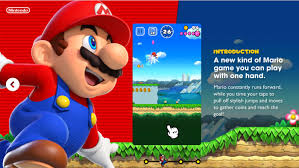
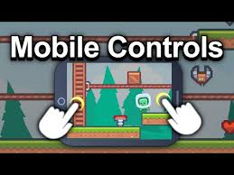
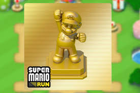

For Mobile Devices go to the App Store(iOS) or Google Play Store (Android) and search for the "Super Mario Run".
Download and install the game.
Step-2: Open and Setup the Game:

Follow the on-screen instructions to setup the game.
Step-3: Basic Controls:

Tap the screen to make Mario jump. The longer you tap, the higher Mario jumps.
Mario runs automatically from left to right. You only need to focus on jumping to avoid obstacles and collect coins.
Step-4: Additional Tips:

Completing challenges can help you earn rewards and progress through the game faster. Their can be level upgradation or inclusion of special powers to the Mario Character.
Try to collect as many coins and special items as you can in each level to improve your score and unlock new features.